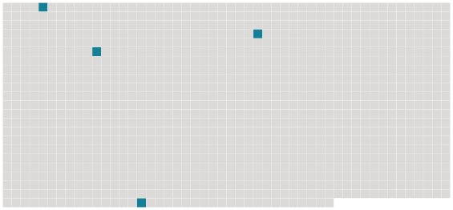

Longueur nb maillons : 4 mentions |
|
Je vous assure qu' [on] ne réfléchit guère à toutes ces subtilités quand l'envie vous prend de faillir. [7 phrases] [4 phrases]
.. Tenez, je vais vous raconter une petite histoire arrivée à une de mes clientes à qui j'aurais donné le bon Dieu sans confession, comme [on] dit. [45 phrases] Le lit fripé, meurtri, défait, restait ouvert, semblait attendre ; un drap traînait jusqu'au tapis ; des serviettes mouillées, dont [on] avait battu les tempes du jeune homme, gisaient à terre à côté d'une cuvette et d'un verre. |
 |
Il est possible de télécharger la ressource sur la page Ortolang |
Si vous avez des questions ou vous voyez des erreurs, merci d'envoyer un mail à silvia.federzoni89@gmail.com |